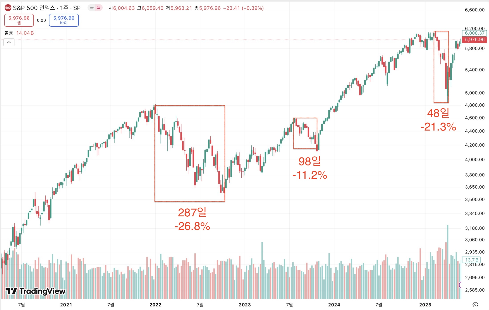
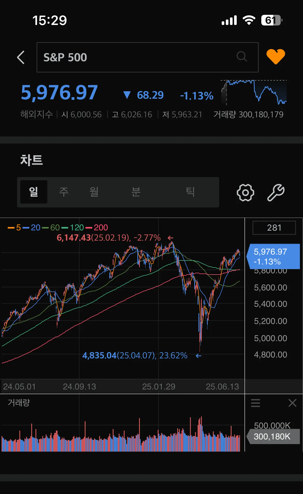
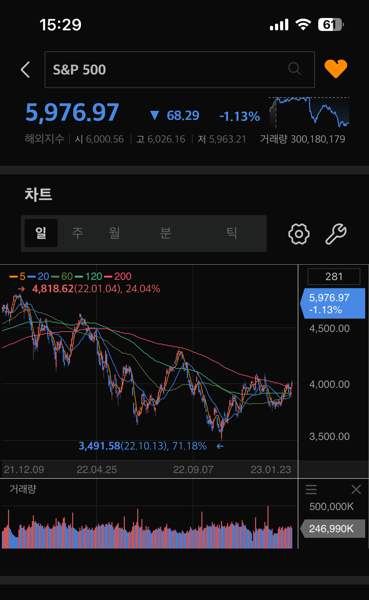
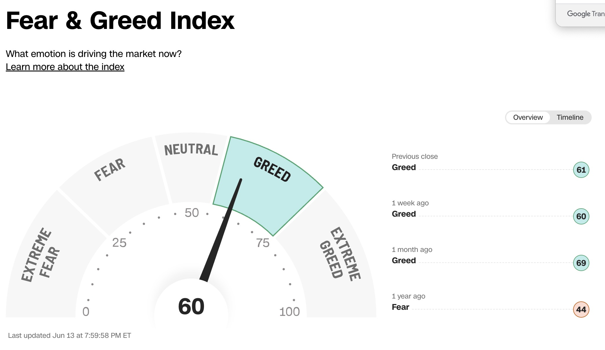
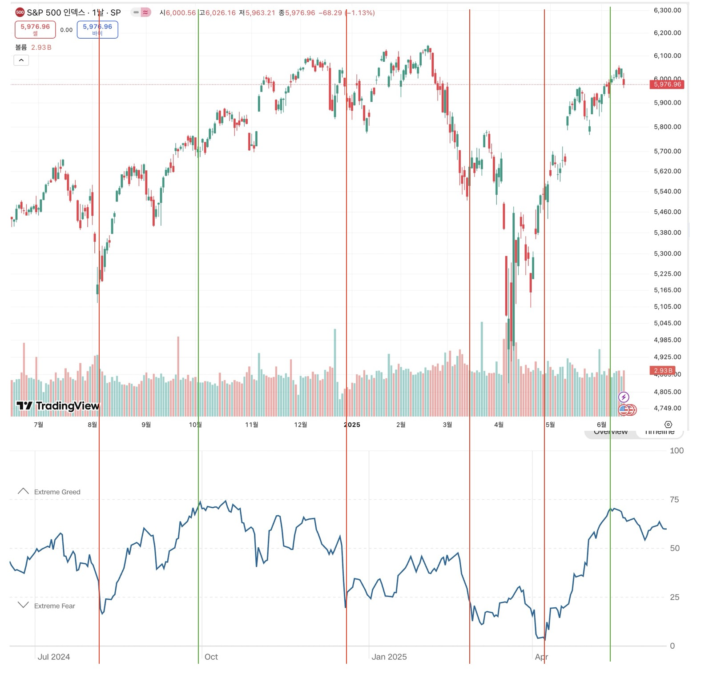
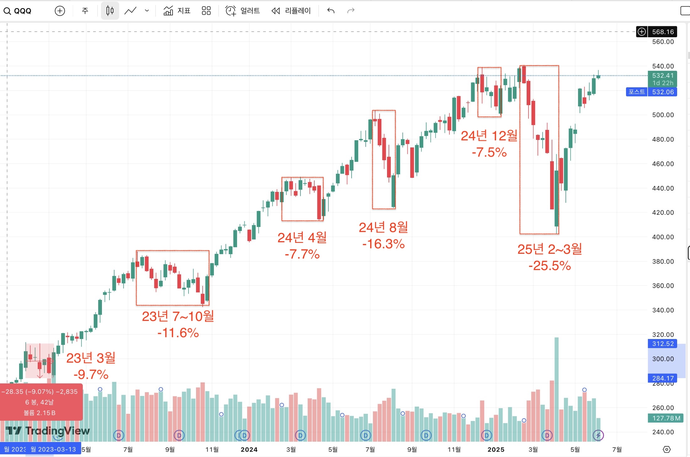
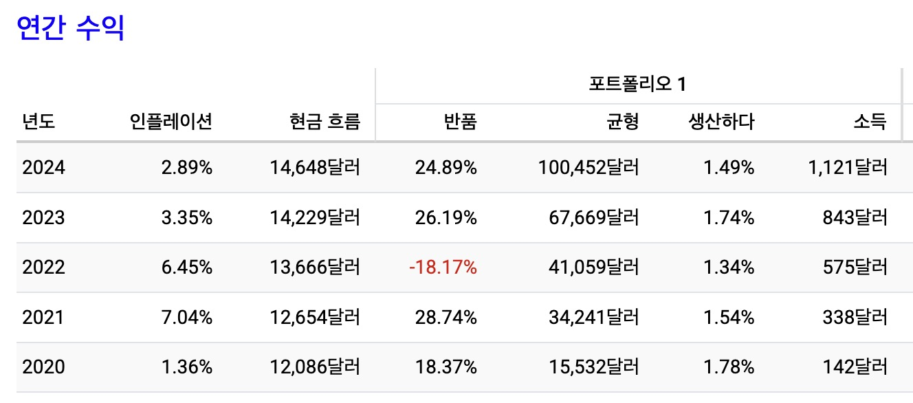
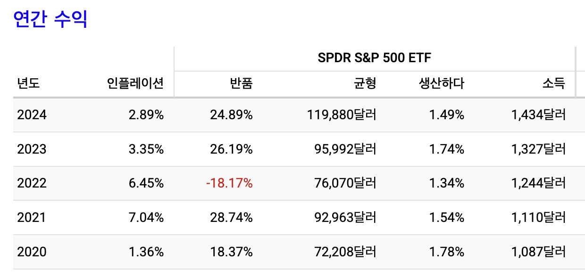
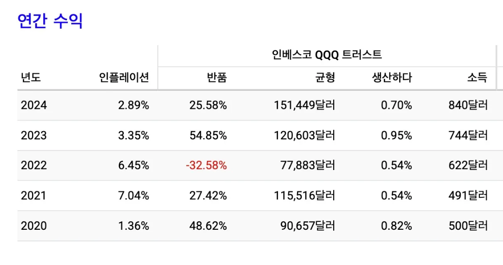

드림주스 주식스터디 · 2강
미국주식 실전투자 전략 세우기
이 스터디는 지식 전달이 아니라
실천을 위한 멘토형 스터디
첫 주식투자 행동하기 어렵고 두렵기 때문에
목표 시각화, 행동의 구체화를 통해 자신감 갖기
목표, 최종상태 : 건강한 주식투자 전략 완성과 행복한 투자 개시
드림주스는 “건강하고 행복한 투자” 추구
투자 위험과 스트레스를 최소화하여 본업에 충실하자.
6하 원칙에 맞춰 전략을 완성한다.
6하 원칙 전략 예시
0년간 월 100만원 투자 가능한 나는누가, 매월언제, 내 계좌로어디서, QQQ를무엇을,
1,000만원을 거치하고 월 100만원을 매수어떻게 하겠다.
6하 원칙으로 전략 세우기
왜?
주식 투자 목적, 목표 정립 → 상황에 따라 흔들리지 않는 마인드를 위한 전략수립의 기초
누가?
자산과 현금흐름의 메타인지(구체적인 자신의 상태, 000만원 월급받는 군인) → 전략의 실효성 확보
무엇을?
우량자산 선정 → 1강 때 강조
언제?
상승장, 하락장, 상승이나 하락 관계없이 등 상황에 따른 투자 방식을 설정하기 위함
어떻게?
투자행동 결정
매수방법 : 정한 주기(매월, 매주 등)에 매수, 거치식 투자, 거치식 + 조정시 분할매수
리스크 관리 : 현금비율 유지(월급 모으기, 단기고점 일부 수익실현)
기간 : 3년 이상 장기투자
어디서?
내 계좌, 배우자 및 자녀계좌
부산 대표음식 돼지국밥
“최고는 없다. 최애만 있을 뿐”
영화 승부
“답이 없지만, 답을 찾기 위해 노력하는게 바둑이다”
나만의 투자전략과 원칙이 필요
1. 왜?
투자 목적 정하기
일반인 vs 투자 거장 – 투자 목적 중심 비교
일반인 vs 투자 거장 – 투자 목적 중심 비교
| 항목 | 일반인 투자자 | 투자 거장 | 체크 |
|---|---|---|---|
| 목표 지향점 | 월급 외 부수입, 단기 수익 / 시세 차익 | 장기 복리 성장자산 증식과 경제적 자유 | |
| 투자 기간 인식 | 단기 중심 (몇 일~몇 달) “빨리 벌고 나올 수 없을까?” | 장기 중심 (수년~수십 년) “좋은 기업과 함께 자라자” | |
| 관심 포인트 | ‘지금 오를까?’ ‘이 종목 잘 오를까?’ | ‘이 기업은 미래에도 돈을 벌까?’ ‘내 돈이 이 회사와 함께 클까?’ | |
| 결과 기준 | 단기 수익 “이번 달 얼마나 벌었지?” | 복리 자산 성장 “5년 후 얼마나 커질까?” | |
| 투자 성찰 | “왜 또 손해봤지?” 결과에 따라 감정 기복 | “이번 투자에서 무엇을 배웠나?” 과정과 원칙에 집중 | |
| 장기적 비전 | 부업처럼 접근 → 수익 나면 좋고 안 나면 그만 | 경제적 독립 / 자본가 마인드 → 투자 자체가 삶의 철학 |
투자 거장처럼 생각하고, 투자 목적을 결정하기
전역 후 경제적 자유 이루기
부동산 투자에 필요한 자산 불리기
자녀 자산 불리기
인플레이션에 부모님 자산 보존
투자 목적에 따라 투자 기간, 투자 종목, 투자 방식이 달라진다.
2. 누가?
자산 메타인지
나는 주식투자를 얼마나 할 수 있는가?
투자 목적(왜?)에 맞는 투자 자금을 결정한다.
예시)
보유자금 : 군인공제회 5,000만원, 적금 2,000만원
→ (결정) 투자자금은 군인공제회 3,000만원 대출 + 적금 2,000만원 = 5,000만원
월급 : 현금흐름표 작성, 월 300만원 중 군인공제회 70만원, 생활비 230만원
→ (결정) 월 300만원 중 군인공제회 20만원, 주식 80만원, 생활비 200만원
3. 무엇을?
(생략)
4. 언제?
실전에서 상승장, 하락장을
판단하는 실마리
타이밍 재는 대신, 정기적으로 투자하면 리스크 분산 가능
상승장 중 조정 시, 하락장 시 매수하면 더 좋은 수익률
(단점은 상.하락장 구분 어려움, 하락이 언제올지 모름.)
실전에서 상승장, 하락장을 판단하는 실마리
1️⃣ 지수 변동률
2️⃣ 경제지표 확인
3️⃣ 200일선
4️⃣ 시장 심리지수 참고
1️⃣ 지수 변동률 : 만약 S&P지수가 -20%라면 매우 좋은 기회!

2️⃣ 경제지표 확인
인플레이션 지수, 금리변동, 실업률, 기업실적
지수가 떨어졌는데 경제지표가 양호하면, 지수는 회복한다.
3️⃣ 200일선
위는 상승장 아래는 하락장


4️⃣ 시장 심리지수 참고 : CNN Fear & Greed Index
- 공포(Extreme Fear)면 하락장, 탐욕(Greed)이면 상승장

두려움과 탐욕 지수 FAQ
CNN 비즈니스 공포·탐욕 지수란 무엇인가?
공포·탐욕 지수는 주식 시장의 움직임과 주가가 적정한지 여부를 측정하는 지표입니다. 이 이론은 과도한 공포는 주가를 하락시키는 경향이 있고, 과도한 탐욕은 그 반대의 효과를 낳는다는 논리에 기반합니다.
두려움과 탐욕은 어떻게 계산되는가?
공포와 탐욕 지수는 주식 시장의 움직임을 측정하는 7가지 지표를 종합한 것입니다. 시장 모멘텀, 주가 강세, 주가 폭, 풋옵션 및 콜옵션, 정크본드 수요, 시장 변동성, 그리고 안전자산 수요입니다. 이 지수는 각 지표가 평균값에서 얼마나 벗어나는지, 그리고 일반적인 변동폭과 얼마나 차이가 나는지를 측정합니다. 각 지표에 동일한 가중치를 부여하여 0에서 100까지의 점수를 부여하며, 100은 최대 탐욕을, 0은 최대 공포를 나타냅니다.
두려움과 탐욕 지수는 얼마나 자주 계산됩니까?
모든 구성 요소와 지수는 새로운 데이터가 나오는 즉시 계산됩니다.
두려움과 탐욕 지수를 어떻게 사용하나요?
공포·탐욕 지수는 시장 분위기를 가늠하는 데 사용됩니다. 많은 투자자가 감정적이고 반응적인 성향을 보이는데, 공포·탐욕 지수는 투자자에게 자신의 감정과 편견을 인지시켜 투자 결정에 영향을 미칠 수 있습니다. 펀더멘털 지표 및 기타 분석 도구와 함께 활용하면 공포·탐욕 지수를 시장 분위기를 파악하는 데 도움이 될 수 있습니다.
주가와 공포 탐욕지수 (24년 7월 ~ 25년 6월)

5. 어떻게?
투자 방식 3종 세트
투자 방식 3종 세트
| 투자방식 | 설명 | 장점 | 단점 | 적절한 시기 |
|---|---|---|---|---|
| 적립식 분할매수 | 매주, 매월 일정금액 투자 (매수 요일과 시간도 결정) | 리스크 분산, 심리적 안정 월급을 적금과 유사 | 수익도 분산 | 신경안쓰고 장기투자 |
| 거치식 투자 | 한 번에 넣고 기다림 | 상승기 수익률 집중 | 하락기 손실 확대, 심리적 불안 | 조정 심할시 (지수 10% 이상 하락) |
| 혼합식 | 거치 + 조정장 분할매수 | 장.단점 절충 | 장.단점 절충 | 상승장 |
혼합식 투자전략
- 투자결정 자금의 50% 일정기간 분할매수
- 월급 투자 결정자금, 매월 CMA 모으기
- CMA 모은 자금을 지수 5~10% 이상 하락시 분할매수
- 시장 하락 심할시 추가 매수로 평균단가 낮추기
수익률을 높이는 가장 확실한 방법은
주가가 떨어졌을 때 최대한 많이 사서 오래 가지고 있는 것이다.
QQQ가 -7% 이상 떨어진 구간
2023년 ~ 2024년 상승장, 2025년

리스크 관리
① 현금 비율 유지
투자자금의 일정 비율은 항상 예비자금으로 보유 (예: 20~30%)
② 수익 실현 전략 (현금비율 부족시 일부 익절)
되도록 자제하고 현금이 없을 때만 실시, ETF는 장기보유 하여 큰 상승을 모두 취해야 함.
리밸런싱의 주기는 투자자의 상황에 따라 다를 수 있지만, 일반적으로 6개월에서 1년에 한 번 정도가 적당합니다. 또는 특정 자산의 비중이 처음 설정한 비율에서 5% 이상 벗어날 때 리밸런싱을 하는 방법도 있습니다. 이는 마치 정기적으로 건강검진을 받고 필요한 경우 생활 습관을 조정하는 것과 비슷합니다. 다만, 너무 자주 리밸런싱을 하면 거래 비용이 증가할 수 있으므로 주의가 필요합니다.
<미국 주식 투자를 위한 존 보글의 인덱스 펀드 철학>, 이민혁 - 밀리의 서재
2020–2024 ETF 투자 종목별, 방식별 수익 비교
| ETF | 투자금 | 적립식 투자 | 거치식 투자 |
|---|---|---|---|
| SPY | 61,000달러 | 100,452달러 | 119,880달러 |
| QQQ | 61,000달러 | 107,636달러 | 151,449달러 |
적립식 VS 거치식




6. 어디서?
내 계좌, 배우자 및 자녀계좌
자녀(배우자)에게 증여 방식 비교
(2천만 원 → 1억 수익 가정, 자녀는 미성년자)
| 구분 | 현금 증여(2천 → 1억) | 주식 증여(1억) |
|---|---|---|
| 증여세 | 없음 (미성년자 공제 2천만 원 이내) | 2천 공제, 8천 과세 × 10% = 800만 원 |
| 양도차익 | 1억 – 2천만 원 = 8천만 원 | ✔ 1년 내 매도: 8천만 원 ✔ 1년 이상 보유: 0원 |
| 양도세 (22%) | 8천만 원 × 22% = 1,760만 원 | ✔ 1년 내 매도: 1,760만 원 ✔ 1년 이상 보유: 없음 |
| 총세금 | 1,760만 원 | ✔ 1년 내 매도: 2,560만 원 ✔ 1년 이상 보유: 800만 원 |
| 연말정산 영향 | 자녀 수익 200만 원↑ 시 부양가족 제외 | 동일 (자녀 수익 발생 시 제외) |
미국 ETF 직접투자 vs 한국 상장 미국 ETF
| 항목 | 🇺🇸 미국 ETF 직접투자 | 🇰🇷 한국 상장 미국 ETF |
|---|---|---|
| 상장 시장 | 미국 증시 (NYSE, NASDAQ) | 한국 증시 |
| 통화 | 💵 달러 (환전 필요) | 💴 원화 (환전 불필요) |
| 매매 시간 | 미국장 (밤, 23:30~06:00 등) | 한국장 (09:00~15:30) |
| 상품 다양성 | 매우 다양 (섹터, 레버리지, 인버스 등) | 제한적 (대표지수형 ETF 중심) |
| 운용 보수 | 낮음 (0.03% ~ 0.2%) | 상대적 높음 (0.1% ~ 0.5%) |
| 양도차익 과세 | 250만 원 초과 시 22% (직접 신고) | 15.4% 기타소득세 원천징수 (연말정산 조정 가능) |
| 배당소득세 | 미국에서 15% 원천징수 | 국내 배당 15.4% 과세 |
| ISA 계좌 가능 여부 | 불가 (해외 ETF 불가) | 가능 (국내 상장 ETF만 허용) |
| ISA 세제 혜택 | 없음 | 수익 200만 원까지 비과세, 초과분 9.9% 분리과세, 최대 2천만 원 * 절세계좌 스터디 클래스 추천 |
한국 주식거래소 상장 ETF
- TIGER, ACE 시리즈는 한국에서 원화로 거래 가능, ISA 계좌에서 투자 가능
| ETF 이름 | 설명 |
|---|---|
| TIGER S&P500 | 미국 대표 500대 기업에 투자 (SPY와 유사) |
| TIGER 미국나스닥100 | 미국 기술주 100개 기업에 투자 (QQQ와 유사) |
| TIGER 미국배당성장 | 배당도 주고 성장성도 있는 미국 우량주 ETF |
포인트
직접투자는 상품 다양성 + 낮은 보수가 장점
→ 하지만 환전, 야간 거래, 세금 신고 번거로움 있음
국내 상장 ETF는 간편성 + 원화 거래 + 낮은 진입장벽
→ 다만 상품 제한, 보수 및 세금 구조 다소 불리